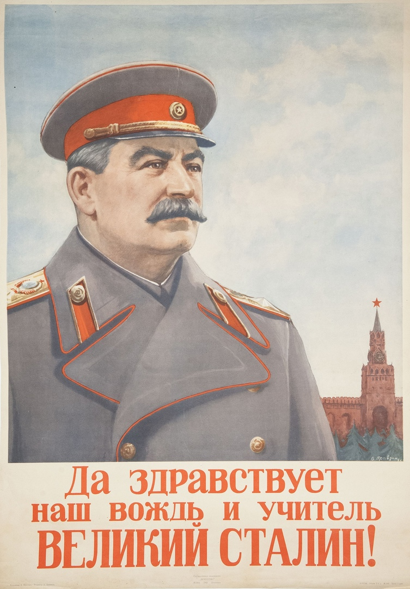
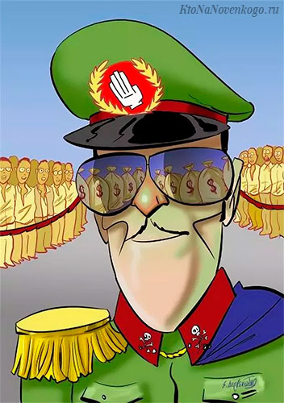

Центр моддинга aoc
Центр моддинга aoc
Центр моддинга aoc
Центр моддинга aoc
 |
Наш оффицальный сервис оффицально подтверждён оффицальной печатью оффицального Черниенко |
 |
Оффицальная подпись оффицального Черниенка что сервис Оффицальный |
| Меню |
| Личности сегмента |
| Читать новости! |
| Монополия в сегменте |
| История |
| Правильные картинки, товарищ! |
 ! ! |
| ! |
 ! ! |
| ! |
 ! ! |
 ! ! |
 ! ! |
 ! ! |
 ! ! |
 ! ! |
| Сказ о нашей жизни |
| Законов много, но моральный таков:
Бей праваков, не щади либерала! Стремятся они превратить нас в рабов, Лишить нас страны, свободы и права. Стремятся продать народ подороже, За деньги, металл или даже бумагу. Их цели очень, уж даж похожи- "борьбой" превратить человека в бродягу. Их цель-обнищание нашей страны, И к ней они верно идут. Для этого народы были поделены, И вражду между ними они создают. Для этого ценности они подменили, Захватили СМИ и интернет. Людей в биомассу они превратили, Теперь в мире правды практически нет Молодёжь гаджетами превратили в грибов, И всё, чтобы нас уничтожить. Им нужны миллионы покорных рабов, Для того чтобы богатства свои преумножить. Создают они вирусы, танки и бомбы, Манипулируют массами как хотят. Высокое и святое они загоняют в гробы, А низменное и грешное боготворят. И стало нормой предавать, Коррумпировать и выражаться, Теперь не стыдно убивать, Перестало аморальное скрываться. Теперь вместо мы появилось я, А товарищи одиночками стали, Приоритетна физиология, а не семья, Разве это будующие, о котором мы мечтали? Все идеалы с землёй сравняли, Всю нашу историю они очерняют, Теперь мы ВОВ и не побеждали, И снова олигархи везде заправляют Теперь уже нет ни былой индустрии, Нет и тех величайших народных достижений, Велекий союз они раздробили, Теперь вместо сотен взлётов миллион падений. Неужели всё уже не вернуть? Неужели мы будем рабами? Есть ли способ всё перевернуть? Как назвать вещи своими именами? Есть способ, и способ верный! Проверен он,уж назад несколько лет. Сплотиться и уничтожить образ скверный, И капитализму сказать чётко нет! Ввести агитработу, внушать и убеждать. Готовить и образовывать человека, Чтобы он свободу сумел не утерять, И не деградировал до австралипитека. Переназвать "тоталитарные" режимы, Что так отрадно называет враг Увы его амбиции неудержимы, И коммунист у него прозван скряг, И враг у него назван другом, И всё что частное народным, А чёрное белым белом, И всё что подло благородным. И под свобой он несёт: Долги, разруху и пушек каннокад. И как Антихрист он взойдёт, И превратит всю нашу жизнь в АД! И станешь ты вечным рабом, Без права ступить шаг. И будешь ты тем самым дном, Лишённых возможнный благ. И что, каков итог, Сего политического сказа? Наш мир есть один огромнейший осторг, В котором правит капитал и аморальная проказа. А потому, стреляй в праваков, не щади либерала, Ты должен власть у них отобрать, Чтобы отстоять семью, страну и право, Чтобы страну с колен поднять! |
| Владимир Черниенко 23.01.2022 |
| Герои сегмента |
| Андрей Швейцаров |
| Владимир Черниенко |
| Пакек |
| Мишшули Плей |
| Илья Бесчастный |